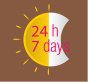

Parenting
These services provide a wide range of support and advice (e.g. general health, sleep etc) and many can help you during pregnancy.
- General advice - including state-specific services:
- Australian Capital Territory
- New South Wales
- Northern Territory
- Queensland
- South Australia
- Tasmania
- Victoria
- Western Australia
- Safety
General advice
Pregnancy, Birth and Baby
An Australian Government funded telephone and online helpline providing support and information to both expecting parents and parents of children aged up to 5 years, from a maternal child health nurse. A range of questions you might have about your child's development or behaviour can be answered, such as: sleeping, settling, feeding, toilet training and tantrums.
1800 882 436 (7am-12am/7 days)
Video call (7am-12am/7 days)
Website
Baby Center
A website containing practical advice on pregnancy and parenting from the first year of life up to the toddler years. Resources include comprehensive website with community forums (and special groups for parents with babies of all ages) and information such as parenting, child care, feeding and routines. Note: This website is sponsored by Johnson and Johnson and Fisher-Price Mum Squad.
Infant Program
Reliable baby healthy eating and active play related information and resources developed by Deakin University in Melbourne. Resources include comprehensive website with videos of cooking demonstrations and links to other credible information.
Kidspot
A website with information relating to babies and children, including parenting, activities and recipes, products and advertisements.
Parentline
Call for advice and counselling about any issues that affect you as a parent.
1300 301 300 (8am-10pm/7 days)
Website
Raising Children
The 'complete resource for Australian parents, taking you from pregnancy to newborns to teenagers'. Resources include comprehensive evidence-based website with podcasts, parent forums, videos, information on parenting toddlers etc.
Australian Capital Territory
Parentline ACT
Parentline offers a free telephone counselling service to parents and carers.
02 6287 3833 (9am-5pm, Mon-Fri)
Website
Maternal and Child Health (MACH) Nursing Service
Call to arrange a first home visit or receive a call from a Maternal and Child Health Nurse.
02 6207 9977 (8am-5pm, Mon-Fri)
Website
New South Wales
Karitane ®
A charity service for children and their parents from birth to 5 years that provides parenting support and advice, antenatal support and education, services to help with parental depression and anxiety, managing toddler behaviour and other related issues. Resources include a website with information on parenting and settling techniques and sleep promotion, helpline and residential, day and outreach services.
1300 227 464 (12:30pm-9pm; 11pm-6:30am Mon-Thu; Fri-Sat 9am-3:30pm)
Website
Parent Line
Free telephone counselling, information and referral for parents and carers of children from birth to 18 years.
1300 130 052 (9am-9pm Mon-Fri; 4pm-9pm Sat-Sun)
Website
Tresillian Family Care Centres
An early parenting service offering families guidance in the early years of their child's life. Resources include information on parenting and settling techniques as well as sleep promotion, telephone and online helpline, community outreach and face-to-face advice.
1300 272 736 (7am-11pm/7 days)
Live Advice
Website
Northern Territory
Territory Families
Free education, guidance and support for parents and others who care for children.
1300 301 300 (8am-10pm/7 days)
Website
Queensland
Parentline Queensland and Northern Territory
Free education, guidance and support for parents and others who care for children.
1300 301 300 (8am-10pm/7 days)
Website
13 HEALTH

A confidential phone service that lets Queenslanders speak with a registered nurse for advice about your or your child's health.
134 325 84 (8am-12am/7 days)
Website
South Australia
Parent helpline
Advice for dads, mums and carers on baby and child health and parenting, including feeding and settling.
1300 364 100 (24 hours/7 days)
Website
Tasmania
Parent helpline
To assist parents with stressful parenting issues or concerns.
1300 808 178 (24 hours/7 days)
Child Health and Parenting Service
Child and Family Health Nurses offer parent information on many topics including: child health and development, practical parenting tips, nutrition, breastfeeding, sleep and settling, communication, play and safety, nutrition, oral health, postnatal depression, fathering, balancing work and family life, play, injury prevention, SIDS and immunisation.
1300 064 544 (varies depending on location)
Website
Victoria
Parentline
Free telephone counselling, information and referral for parents and carers of children from birth to 18 years.
13 22 89 (24 hours/7 days)
1800 199 008 (after hours)
Website
Maternal Health and Child Health Line
State-wide telephone service available to Victorian families with children from birth to school age. Information, support and guidance can be provided regarding a range of issues including child health, nutrition, breastfeeding, maternal and family health and parenting.
13 22 89 (24 hours/7 days)
1800 199 008 (after hours)
Website
Queen Elizabeth Centre
QEC helps young children living in vulnerable situations get the best start in life, by providing families with specialised services, guidance and education. Resources include website with written, audio and video advice, telephone consultation, day stay, outreach and skills development programs.
03 9549 2777
theqec@qec.org.au
Website
Western Australia
Parenting Line WA
A confidential telephone counselling and information service for parents and others concerned with parenting. The service provides guidance, support and information about parenting issues. Referral and information about local services and resources also available.
1800 654 432 (24 hours/7 days)
Ngala Helpline
Provides support and advice for parents with babies and children up to 18 years old.
1800 111 546 (8am-8pm/7 days)
Website
Safety
Product Safety Australia
Australian Government website for the ACCC, which provides safety information about a variety of products, including equipment, toys and furniture, as well as applicable standards and recalls.
Victoria
Toys and Nursery Safety Line
A dedicated telephone line provided by Consumer Affairs Victoria for parents and carers to make enquiries, discuss concerns about the safety of toys and nursery products and report unsafe products.
1300 364 894 (8am-8pm/7 days)